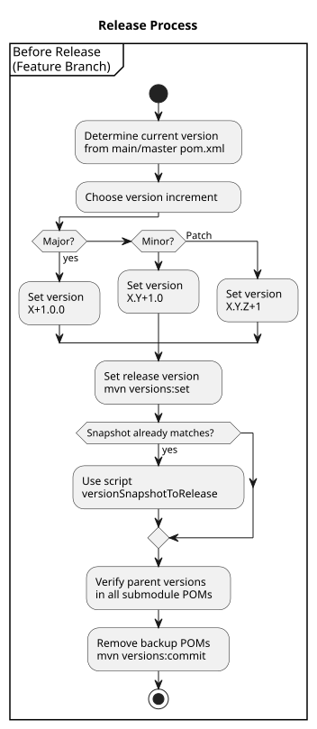
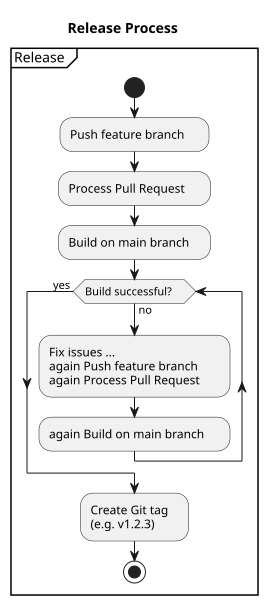
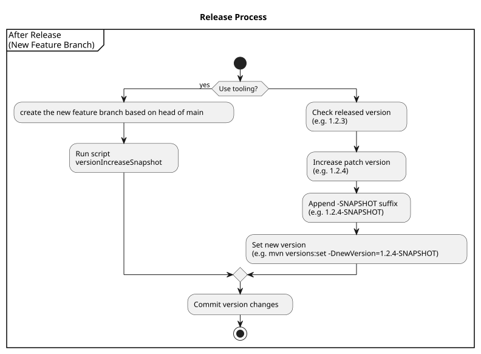

versioning
|
policies
release version
|
release versions are fixed versions release versions are published to the central maven repository. release versions must be immutable since the published package is immutable. |
snapshot version
The project makes use of SNAPSHOT versions,
which are not published to the maven repository.
branch
|
main is for release only SNAPSHOT versions do not appear in main. SNAPSHOT versions are in feature-branches. |
Just before merging to main a the version in the feature-branch has to be updated to a NEW release version by removing the suffix "-SNAPSHOT".
build
|
release is on main only:
|
Release Process
Before Release
All steps in this section are performed in your feature branch that will be released.

determine new release version
we refer to maven versions stored in the 'pom.xml' file, since we don’t rely on git tags.
Determine the new release version:
-
get current release from pom in main branch
example: the current version in master is1.2.2 -
increase version number (major / minor / patch)
-
if you increase patch leave major and minor as is
example: increase patch means the new version is1.2.3 -
if you increase minor leave major as is and set patch version to
0
example: increase minor means the new version is1.3.0 -
if you increase major set minor and patch version to
0
example: increase major means the new version is2.0.0
-
set new release version
In your feature branch the version to the determined new release version by using this command:
mvn versions:set "-DnewVersion=<<new release version>>"example:
mvn versions:set "-DnewVersion=1.2.3"tooling:
if the new release version was just an increment of patch, your feature branch might already have the right version extended with the suffix "-SNAPSHOT". So you just habe to remove the suffix '-SNAPSHOT'.
this is implemented in the script versionSnapshotToRelease.
example: you can use the script if the wanted release version is 1.2.3 and snapshot version in your feature-branch fits to it since it is 1.2.3-SNAPSHOT.
Verify all submodule POMs and clean up backups
Verify that all submodule pom.xml files have the correct parent version (the version you just set).
After verification, remove the backup POM files created by the versions plugin:
mvn versions:commitRelease

Push your feature branch to the remote repository.
Create a merge request / pull request and merge your feature branch into master/main.
Build the project from master/main to ensure the release version builds correctly.
Tag the release commit with the release version (example: v1.2.3), using your usual Git tagging conventions.
After Release

All steps in this section are performed in your next feature branch that will later be merged into main.
Bump the version and set a new -SNAPSHOT version
-
Check the current version in master/main (for example
1.2.3). -
Increment the version by one patch level (for example to
1.2.4). -
Append the -SNAPSHOT suffix (for example
1.2.4-SNAPSHOT). -
In your new feature branch, set this SNAPSHOT version in the pom.xml:
mvn versions:set -DnewVersion=1.2.4-SNAPSHOT mvn versions:commit -
Commit the changed pom.xml files to your feature branch.
tooling:
Optionally, you can use the versionIncreaseSnapshot script to help with incrementing the version.
| The process described here is still partly manual and therefore not fully robust. Mistakes can occur, especially when setting or incrementing versions. Please double-check the versions in all pom.xml files and in Git tags. |
documenting
policies
doc as code
-
docs are part of the git repository.
-
docs are part of the release (package / final artifact)
so generating / rendering the docs is done within build
tec stack
-
we use adoc and plantuml. see ADR 002: Standardize Documentation Stack on AsciiDoc and PlantUML
docs are in parent module
exception: generated docs like jacoco or javadoc
Publish Process
-
release version:
after pushing to main (merging into main) a CI-step publishes the docs. -
snapshot version:
only after pushing changes in src/*\* to a branch named *Site\* a CI-step publishes the docs.
publishing the docs is implemented by the github action 'publishSiteToPages.yml'
this also implements collecting generated docs (jacoco, javadoc) from submodules, since a maven implementation is complex and ugly.
see ADR 005: Aggregate … via GitHub Actions